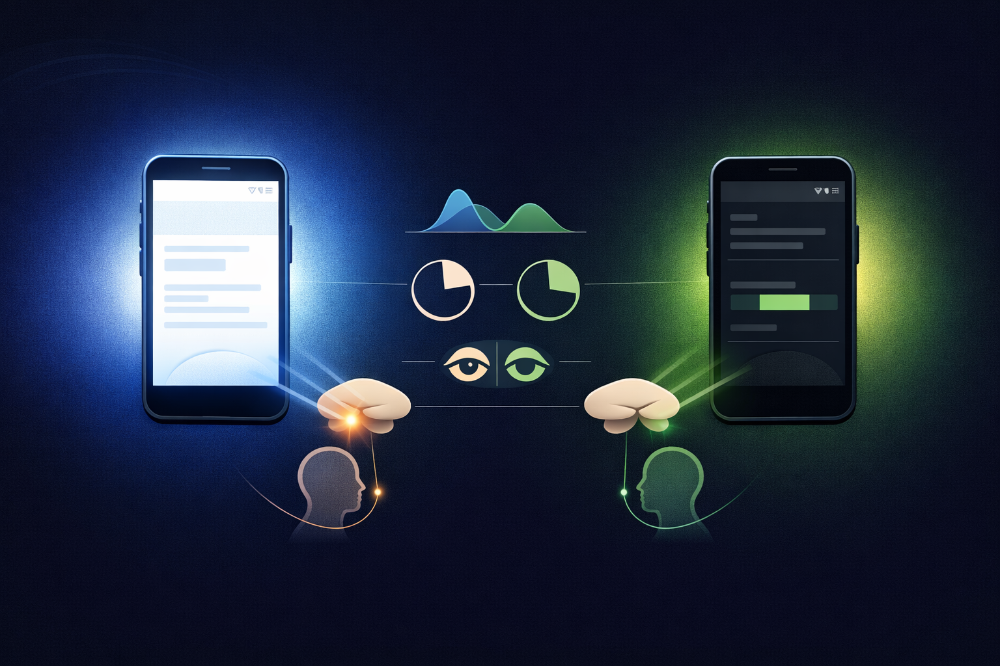

By Rustam Iuldashov
30 years lived experience with chronic migraine | Sources: 24 peer-reviewed references including Brain (Oxford), Nature Neuroscience, Physiological Reviews, Journal of Headache and Pain | Last updated: March 2026
Medical Review: This content is based on peer-reviewed research from Brain, Nature Neuroscience, Physiological Reviews, Journal of Headache and Pain, Pain, and Frontiers in Neurology.
Important Notice: This article is for informational purposes only and does not replace professional medical advice. The Mi dark theme and Breathing Garden are supportive design features. They do not diagnose, treat, or prevent migraine disease.
Key Takeaways
- Up to 90% of migraineurs experience photophobia during attacks — a neurological amplification of pain through the thalamic pathway, not just visual discomfort [1][2]
- Blue and white light most strongly activate the migraine pain pathway; green light is measurably least aggravating [4][5]
- Mi’s near-black background (#16181C), warm gray text, and desaturated green and lavender palette reflect the color science of photophobia directly
- Cognitive load compounds sensory overload during attacks — minimizing taps and decisions directly reduces the burden on an overwhelmed brain [15][18]
- Core attack-time functions in Mi — pain logging, medication timer, Breathing Garden — require one to two taps from any screen
- Dark mode in Mi is not a preference setting — it is the only mode, because a migraine attack is not something you should have to prepare for
The Problem No One Designs For
You know the moment.
The pain has arrived. The room is dark. Curtains closed. And yet — you need to log something. Check a medication timer. Find a quiet corner of your phone that won’t send a spike of white light straight into your skull.
Most apps were not built for this. They were built for bright offices, outdoor use, high-contrast readability in sunlight. The default assumption is a user who is awake, alert, and comfortable.
A migraine attack destroys every one of those assumptions.
After 30 years of living with migraine, I built Mi around a different one: sometimes your user can barely open their eyes. Every color, every tap count, every brightness decision in this app starts from that place.
Why Light Actually Hurts
Photophobia — light sensitivity during migraine — is not “the screen is too bright.” It is a neurological cascade that makes ordinary room light feel like a physical assault.
Up to 90% of people with migraine experience it during an attack. [1][2] The mechanism involves a pathway most people have never heard of. Photic signals from your retina travel to thalamic neurons that also process pain from the meninges — the membrane surrounding your brain. [3] Light and headache pain converge on the same neurons.
When you are mid-attack, your trigeminal pain system is already firing. Any incoming light signal does not stay in the “vision” department. It amplifies the pain signal directly. [3][4] This is why light does not merely annoy. It genuinely hurts.
Not all light hurts equally. Research from Harvard Medical School found that green light exacerbates migraine significantly less than white, blue, amber, or red. [4] Blue light activates the thalamic pain pathway most powerfully. Green activates it least. [4][5] These are not minor differences in patient preference — they are measurable differences in neurological pain output.
And photophobia does not switch off between attacks. Studies show that even headache-free migraineurs tolerate less ambient light than people without migraine history. [6][22] The sensitized brain is always partially primed. Every light interaction is a question of threshold management, not just comfort. [21]
🩺 When to Seek Immediate Medical Help
Light sensitivity combined with any of the following is a medical emergency — do not wait:
- Sudden, severe headache unlike any you have had before (“thunderclap headache”)
- Stiff neck, fever, or rash alongside head pain and light sensitivity
- New neurological symptoms: confusion, weakness, vision loss, difficulty speaking
- Headache following a head injury
These may indicate meningitis, subarachnoid hemorrhage, or other serious conditions that require urgent evaluation. Call emergency services or go to the nearest emergency department immediately.
Migraine photophobia alone — even when severe — does not typically produce these warning signs.
What a Standard App Screen Does to Your Brain
A typical app on default settings is a bundle of photophobia triggers.
A white background emits near-maximum luminance across all wavelengths — including the blue range that most powerfully activates thalamic pain neurons. [4] Every text block becomes a light source pointed at a sensitized visual cortex. [7]
Digital screens concentrate their emission in the 415–455 nm blue range — precisely the wavelengths that activate melanopsin in intrinsically photosensitive retinal ganglion cells. [7][8] These cells do not just manage vision. They feed directly into the pain-relevant thalamic pathway. [3]
Many screens also use pulse width modulation (PWM) to control brightness — rapidly switching pixels on and off to simulate dimness. That invisible flicker can trigger headaches in sensitive individuals even when they cannot consciously perceive it. [8][9]
The result: the phone you need during an attack is the same phone most likely to make the attack worse.
A survey of dark mode users found that 52% switch to dark mode specifically as a migraine management strategy. [11] More than one-third of Slack users who requested a dark theme cited photophobia or migraine as the reason. [12] The demand is real. The science backs it.
How Mi’s Dark Theme Was Built Around the Science
Mi runs exclusively on a dark theme. There is no light mode — not by oversight, but by decision.
The background (#16181C) is not pure black. Pure black on an OLED screen creates extreme contrast with any bright element, which amplifies visual discomfort in sensitive users. [13] Near-black absorbs ambient light, reduces overall screen luminance, and on OLED displays — where black pixels emit zero light — cuts the blue light reaching your retinas dramatically. [14]
The text color (#BDBDBD) is warm gray, not white. Pure white on dark background creates a 21:1 contrast ratio — technically excellent for readability, neurologically harsh for photophobic eyes. Warm gray achieves legibility while reducing the luminance of every character on screen. [9]
The accent palette — dusty lavender (#5B4B70), muted teal (#6B9BAA), desaturated green (#6AAA7A), and antique gold (#C5A059) — was chosen with the color science of photophobia in mind. Every tone is desaturated, low-intensity. No pure blue. No white. No bright red. The most aggravating wavelengths are absent from the interface. [4][5]
The warm greens are not accidental. Research consistently identifies green as the wavelength least likely to worsen migraine headache. [4][5] Even at low intensity, these tones sit at the safest end of the photophobia spectrum. You are looking at them every time you open the app.

The Second Problem: Cognitive Load Hurts Too
Photophobia gets the most attention. But migraine is not only a visual disease.
During an attack, the entire sensory system is dysregulated. Researchers describe migraine as fundamentally a disorder of sensory threshold. [15][23] Up to 70% of migraineurs experience cutaneous allodynia during attacks — meaning even a light touch on skin becomes painful. [16][17] Phonophobia affects a similar proportion. The migraine brain during an attack is overloaded across every channel simultaneously. [18][20][24]
This matters for app design because cognitive demand is sensory input. Every decision point on screen is a small neurological tax. Every menu to parse, every setting to locate, every unnecessary tap adds to a system that is already at its limit.
Core functions during an attack — logging pain, checking a medication timer, opening Breathing Garden — require one or two taps from any screen in Mi. Navigation uses large, well-spaced touch targets. No precision required from fingers that may themselves be hypersensitive. [17]
This is exactly why we built Breathing Garden. It asks nothing of you. One tap. A slow visual rhythm takes over. The research on controlled breathing for acute pain is meaningful [19] — but the design intention is simpler. Sometimes what you need is not information. It is a quiet, low-light anchor that does not think at you.
Dark mode is not an accessibility option in Mi. It is the only mode — because a migraine attack is not something you should have to prepare for.
Using Mi During an Attack
You do not need to set anything up. Mi’s dark theme is always on.
- When an attack starts: Open Mi → tap the attack log → enter your pain level and symptoms in three taps. Drop your phone brightness to minimum on a near-black interface and almost no light reaches your eyes.
- No searching: Medication timers you have set previously appear on the home screen automatically. Everything is where you left it.
- If the pain is overwhelming: Open Breathing Garden from the home screen. Watch the slow green pulse. Let it set the pace of your breath. Nothing else is required.
- When it passes: Everything you entered is saved. Review your full attack log when you can actually look at a screen without wincing.
🌙 Built for the Dark Moments
Mi was designed from the first line of code around a single assumption: sometimes your user can barely open their eyes. Every color, every tap, every brightness decision reflects that.
Built by someone who has lived with migraine for 30 years and needed this app to exist.
Key Takeaways
- Up to 90% of migraineurs experience photophobia during attacks — a neurological amplification of pain through the thalamic pathway, not just visual discomfort [1][2]
- Blue and white light most strongly activate the migraine pain pathway; green is least aggravating [4][5]
- Mi’s near-black background, warm gray text, and desaturated green and lavender palette reflect the color science of photophobia directly
- Cognitive load compounds sensory overload during attacks — minimizing taps and decisions directly reduces the burden on an overwhelmed brain [15][18]
- Core attack-time functions in Mi require one to two taps from any screen
- Dark mode in Mi is not a preference setting — it is the only mode, because a migraine attack is not something you should have to prepare for
⚕️ Important Medical Disclaimer
This article is for informational and educational purposes only and does not constitute medical advice, diagnosis, or treatment. The author, Rustam Iuldashov, is not a licensed physician, neurologist, or healthcare professional. He is a patient advocate with 30 years of personal experience living with chronic migraine.
All clinical claims in this article are sourced from peer-reviewed research published in indexed medical journals. Study designs and sample sizes are noted where applicable. The dark theme design and Breathing Garden feature described here are supportive tools — not validated clinical interventions for photophobia.
Migraine Companion is a self-management tracking tool. It does not diagnose, treat, or prescribe. If you are experiencing new, severe, or unusual headache symptoms — particularly with fever, stiff neck, vision changes, confusion, or neurological deficits — seek emergency medical care immediately. Do not use this article or any app feature to self-diagnose or delay treatment.
This content was last reviewed for accuracy in March 2026.
References
- Choi JY, Oh K, Kim BJ, Chung CS, Koh SB, Park KW. “Usefulness of a Photophobia Questionnaire in Patients With Migraine.” Cephalalgia. 2009;29(6):635–641. doi:10.1111/j.1468-2982.2008.01822.x. Study design: Cross-sectional. n=103.
- Bigal ME, Ashina S, Burstein R, et al. “Prevalence and Characteristics of Allodynia in Headache Sufferers.” Neurology. 2008;70(17):1525–1533. doi:10.1212/01.wnl.0000310645.31020.b1. Study design: Population-based survey. n=24,000+.
- Noseda R, Kainz V, Jakubowski M, et al. “A Neural Mechanism for Exacerbation of Headache by Light.” Nature Neuroscience. 2010;13(2):239–245. doi:10.1038/nn.2516. Study design: Animal model + human case series.
- Noseda R, Bernstein CA, Nir RR, et al. “Migraine Photophobia Originating in Cone-Driven Retinal Pathways.” Brain. 2016;139(7):1971–1986. doi:10.1093/brain/aww119. Study design: Psychophysical + electrophysiological. n=41.
- Nir RR, Lee AJ, Huntington S, et al. “Color-Selective Photophobia in Ictal vs. Interictal Migraineurs and in Healthy Controls.” Pain. 2018;159(10):2030–2034. doi:10.1097/j.pain.0000000000001303. Study design: Cross-sectional. n=81.
- Martin LF, et al. “Photophobia in Migraine: A Symptom Cluster?” Frontiers in Neurology. 2021;12:748. doi:10.3389/fneur.2021.648. Study design: Systematic review.
- Digre KB, Brennan KC. “Shedding Light on Photophobia.” Journal of Neuro-Ophthalmology. 2012;32(1):68–81. doi:10.1097/WNO.0b013e3182474548. Study design: Review.
- Perez MA, et al. “Current Understanding of Photophobia, Visual Networks and Headaches.” Frontiers in Neurology. 2019;10:232. doi:10.3389/fneur.2019.00232. Study design: Narrative review.
- Matt E, et al. “Avoid or Seek Light: A Randomized Crossover fMRI Study.” Journal of Headache and Pain. 2022;23:99. doi:10.1186/s10194-022-01466-0. Study design: Randomized crossover fMRI. n=21.
- Martin LF, Schwedt TJ. “Photophobia in Migraine: A Symptom Cluster?” Frontiers in Neurology. 2021;12:748. doi:10.3389/fneur.2021.748. Study design: Review.
- Lens.com Research Team. “How Many People Use Dark Mode to Reduce Eye Strain?” 2026. URL: lens.com.
- TheraSpecs. “Is Dark Mode Better for Headaches, Eye Strain & Light Sensitivity?” URL: theraspecs.com.
- Kelai Display. “Does OLED Cause Eye Strain During Long Use?” 2025. URL: kelaidisplay.com.
- 1883 Magazine. “Does LG OLED Cause Less Eye Strain?” 2025. URL: 1883magazine.com.
- Schwedt TJ. “Migraine Understood as a Sensory Threshold Disease.” Dialogues in Clinical Neuroscience. 2019;21(3):209–215. doi:10.31887/DCNS.2019.21.3/tschwedt. Study design: Narrative review.
- Ashkenazi A, et al. “Identifying Cutaneous Allodynia in Chronic Migraine.” Cephalalgia. 2007;27(2):111–117. doi:10.1111/j.1468-2982.2006.01248.x. Study design: Prospective cohort. n=89.
- TheraSpecs. “Sensory Processing in People with Migraine.” 2021. URL: theraspecs.com.
- Schwedt TJ. “Multisensory Integration in Migraine.” Current Pain and Headache Reports. 2013;17(5). doi:10.1007/s11916-013-0327-8. Study design: Review.
- Burch RC, Buse DC, Lipton RB. “Migraine: Epidemiology, Burden, and Comorbidity.” Neurologic Clinics. 2019;37(4):631–649. doi:10.1016/j.ncl.2019.06.001. Study design: Review.
- Harriott AM, Schwedt TJ. “Migraine Is Associated With Altered Processing of Sensory Stimuli.” Current Pain and Headache Reports. 2014;18(11):458. doi:10.1007/s11916-014-0458-8. Study design: Review.
- Seidel S, et al. “Psychiatric Comorbidities and Photophobia in Patients with Migraine.” Journal of Headache and Pain. 2017;18(1):18. doi:10.1186/s10194-017-0718-1. Study design: Case-control. n=60.
- Kowacs PA, et al. “Interictal Photophobia and Phonophobia.” Applied Sciences. 2021;11(6):2474. doi:10.3390/app11062474. Study design: Observational. n=79.
- Goadsby PJ, et al. “Pathophysiology of Migraine: A Disorder of Sensory Processing.” Physiological Reviews. 2017;97(2):553–622. doi:10.1152/physrev.00034.2015. Study design: Comprehensive review.
- “Exploring Alterations in Sensory Pathways in Migraine.” Journal of Headache and Pain. 2022;23:5. doi:10.1186/s10194-021-01371-y. Study design: fMRI comparative. n=60.

How We Create Content
- Peer-reviewed sources only. Brain (Oxford), Nature Neuroscience, Physiological Reviews, Journal of Headache and Pain, Pain, Frontiers in Neurology, Cephalalgia, Dialogues in Clinical Neuroscience, Current Pain and Headache Reports.
- Study transparency. Study design and sample sizes noted for all clinical references.
- Source verification. All claims backed by numbered references with DOI links.
- Experience + Science. 30 years personal migraine experience combined with peer-reviewed photophobia and neuroscience research.
- Regular updates. Articles reviewed when significant new research on photophobia mechanisms or OLED display technology emerges.
- No conflicts of interest. No funding from any pharmaceutical, technology, or medical device company.
Your Phone Doesn’t Have to Hurt
Mi runs exclusively on a dark theme — near-black backgrounds, warm gray text, desaturated greens and lavenders. Built for the moments when even a glance at a screen feels like a gamble. By someone who has lived those moments for 30 years.
Last reviewed: March 2026
Next scheduled review: September 2026